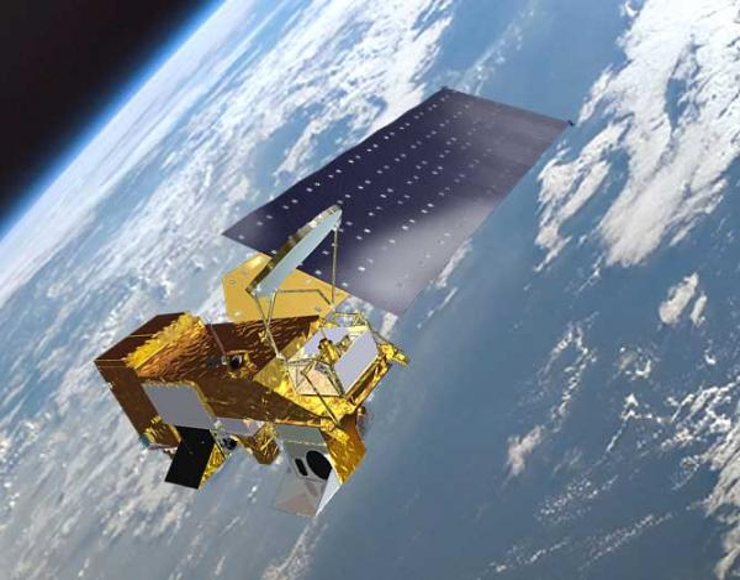
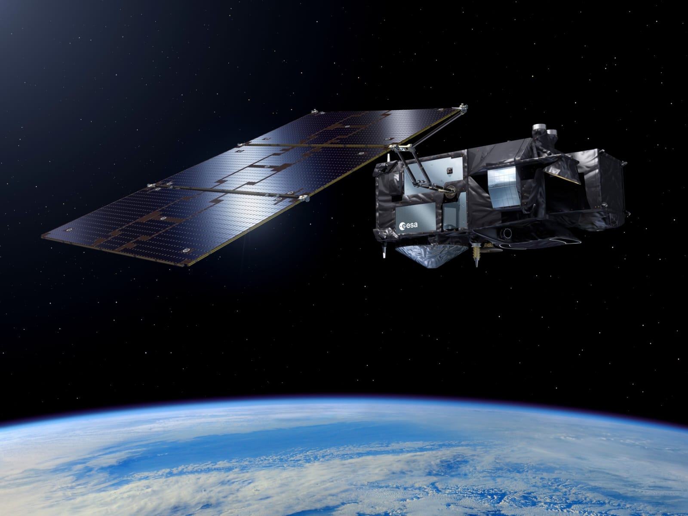
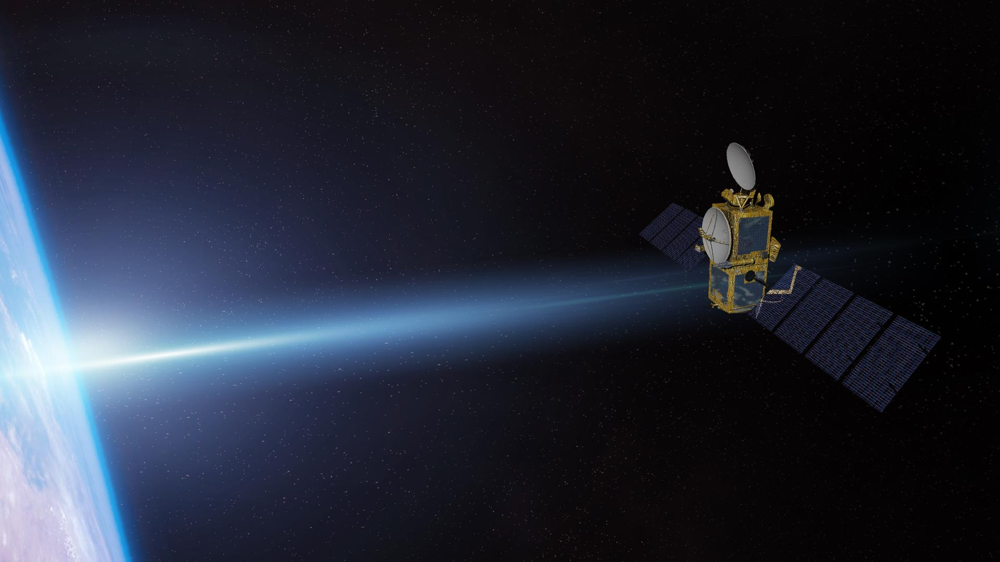

Science — Sharks & Satellites
How Satellites Work

Satellites act as “space eyes” observing Earth’s oceans. They measure SST, currents, chlorophyll, and more to predict shark hotspots.
SST: Sharks prefer certain temperatures.
Currents: Affect migration & food availability.
Chlorophyll: Indicates plankton abundance.
Key Satellites Used

MODIS
Measures ocean color and chlorophyll.

Sentinel-3
Tracks SST and ocean currents.

Jason-series
Measures sea level and currents.
Facts & Figures
Did You Learn?
- Satellites are “eyes in space” for monitoring oceans.
- Shark habitats, behavior, and migration are tracked.
- Satellite science aids research, conservation, and safety.
- Real-time data helps prevent conflicts and protect ecosystems.